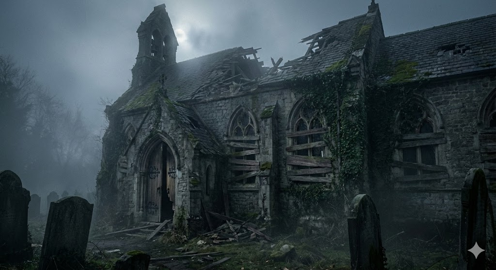

Luego de caminar por 10 mins por fin llegas a la iglesia.  La iglesia está toda destrozada y tiene las ventanas barricadas con tablas de madera. Algo tuvo que pasar aquí. ¿Qué quieres hacer? Entrar a la iglesia Regresar